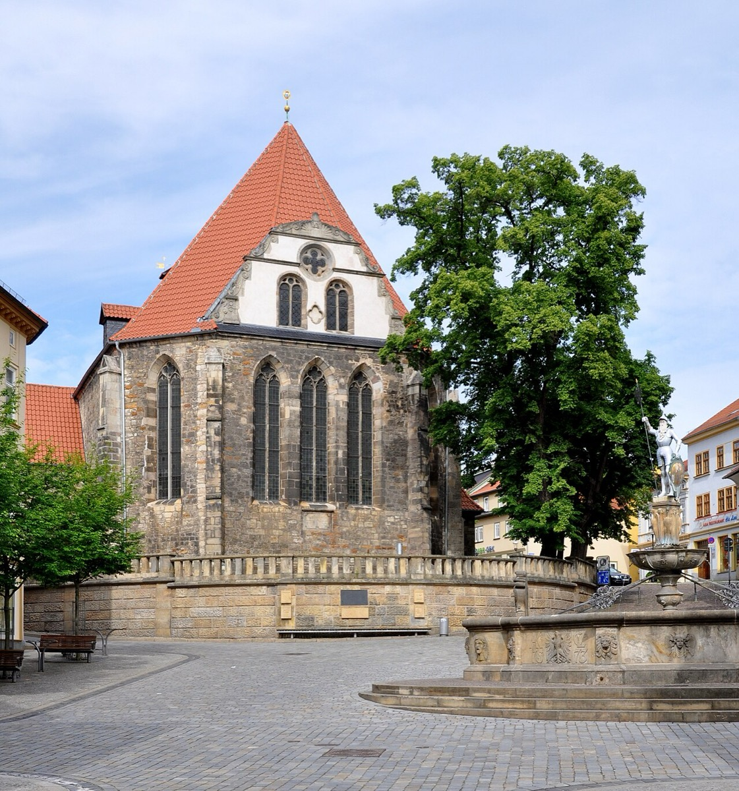

Arnstadt: the difficult young genius

Arnstadt is where the documentary Bach suddenly becomes vivid — and the portrait is not flattering. It is the era of the sword scuffle, the four-month unauthorized absence, the consistory scoldings, and the congregation-confusing harmonies: a teenaged organist too gifted for a provincial post, learning at everyone's expense (his own included) how to be employed.
He arrived by a slight detour: six months as a violinist-lackey at a junior Weimar court in early 1703 — his first paid post, filed here as prologue. Then Arnstadt, deepest clan territory (Bachs had worked the town for a century), finished a fine new organ in its Neue Kirche, and the eighteen-year-old was engaged to examine it. He played it; the town heard him; the examination became an audition. In August 1703 they hired him as organist on remarkable terms — a salary better than his seniors', light duties, an instrument fresh from the builder's hands.
Genius on a light leash promptly pulled. In August 1705 a street confrontation with a student bassoonist he had insulted — Zippel Fagottist, roughly "greenhorn bassoonist" — ended with drawn swords in the market square; the consistory's investigation survives, complete with Bach's unrepentant testimony. That winter he requested four weeks' leave to walk to Lübeck — 250 miles — to hear the aged Dieterich Buxtehude, the presiding wizard of the northern organ world, and his famous Abendmusik concerts. He stayed four months. The reprimand hearing on his return produced the era's most revealing exchange: charged also with weaving "strange variations" and "foreign tones" into the chorales — confusing the congregation — Bach answered his employers with barely veiled contempt, and to the separate complaint that he refused to rehearse the student choir, he offered conditions instead of apologies. A final entry notes an "unfamiliar maiden" invited to make music in the choir loft — very possibly Maria Barbara Bach, his cousin and future wife.
Under the incidents, the real business of Arnstadt was growth. The earliest organ masterpieces are taking shape; the Buxtehude pilgrimage poured the stylus phantasticus — the free, dramatic northern manner — directly into him at the source; and by 1706 he had simply outgrown the town, the post, and the patience on both sides. When Mühlhausen's organist died in 1706, the exit presented itself.
Reading these documents kindly: the consistory minutes record a collision, not a villain — a body doing its institutional duty, and a twenty-year-old who knew (correctly, history confirms) that he understood music better than anyone judging him, and had not yet learned that this was insufficient. He learned it slowly, expensively, and — the Leipzig cards will show — never completely.
Study anchor: the Lübeck pilgrimage is the era's essential card — the single most consequential act of self-education in Bach's life, and the source of the organ music's northern fire.